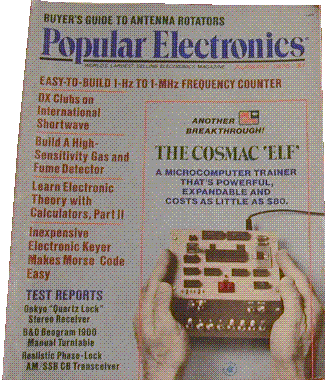
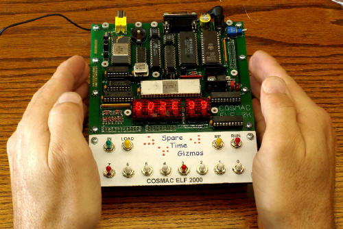
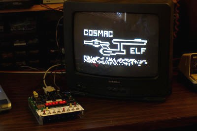
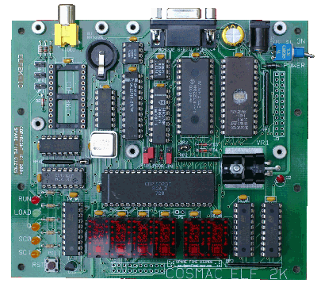

COSMAC Elf 2000
COSMAC Elf 2000


|
|
|
 Introduction How many of you remember the Altair 8800?? Okay, now how many of you also remember the COSMAC Elf? Like the Altair, the Elf was another "build it yourself" computer project published by Popular Electronics magazine. The Elf made its first appearance in August of 1976 in an article written by Joseph Weisbecker, just one year after the Altair. The Altair was an expensive machine. In those days, its 8080 CPU chip alone cost something like $300, and an entire Altair system with memory but still without any peripherals would cost you well over $1,000 to build. In contrast, the entire Elf project, including the CPU chip, could be built for around $80 in 1976. Even adding a video display would only cost you another $20 or so.
 Unlike the Altair, the Elf was a computer that everybody could afford, including, at that time, a poor high school student like me. A lot of people, including me, built a COSMAC Elf as their first computer and still have fond memories of toggling in little programs with the front panel switches. The good news about the COSMAC Elf was that the CDP1802 had a built in "loader" mode that allowed you to toggle in programs directly from the front panel with only eight switches and virtually no extra hardware. The bad news about the Elf was that you had to toggle in programs using the eight front panel switches! Once a program got longer than a few dozen bytes, this method got very tedious...Unfortunately I disassembled my Elf after a few years to use the parts in
other projects, but fortunately I did save the RCA CDP1802 CPU chip. That
chip has followed me around the country for almost three decades, until now,
when I finally decided it was time to put it to use again in the Spare Time
Gizmos COSMAC Elf 2000!
IntroductionThe Spare Time Gizmos COSMAC Elf 2000 is a reproduction of the original COSMAC Elf as published in the pages of Popular Electronics magazine, August 1976. Although I tried to keep the look and feel of the original, I had no hesitation about updating the Elf 2000 with the latest in hardware. Unlike its ancestor, the Spare Time Gizmos COSMAC Elf 2000 features:
FirmwareYou can use your Elf 2000 just like the original Elf - by toggling in all your programs with the switches - but this gets old pretty fast. To make life easier, the Elf 2000 has a socket for a 32K byte EPROM and you can program a 27C256 with any 1802 code you like and install it, or you can use the standard EPROM firmware provided by Spare Time Gizmos. The standard EPROM contains several distinct software modules, including:
LicensingAll COSMAC ELF 2000 Files are Copyrighted by Spare Time Gizmos and/or other parties.
 If you'd like to build your own COSMAC Elf 2000, then we'd like to help you. First of all, you are welcome to download the User's Manual and the firmware for free. You'll find that the complete schematics and parts lists for the Elf 2000 and all option boards are in the back of the User's Manual. Please remember that all ELF 2000 documentation files including, but not limited to, schematics and the User's Guide, are released under the terms of the GNU Free Documentation License. Permission is granted to copy, distribute and/or modify these files under the terms of the GNU Free Documentation License, Version 1.1 published by the Free Software Foundation; with no invariant sections; with the front cover text "Portions Copyright (C) 2004-2006 by Spare Time Gizmos" and our URL, and with no back cover text.The source for the POST, the monitor and debugger, the VT52 terminal emulator, and some of the tools used to generate the EPROM image are Copyright (C) 2004-2006 by Spare Time Gizmos. In general, but not in every cases, these files are distributed under the terms of the GNU General Public License. Most of the other EPROM components, including SEDIT, EDT/ASM, Forth, BASIC and the BIOS, are Copyright (C) 2004-2006 by Michael H Riley. Mike has kindly granted permission to use these components in both the Elf 2000 and the Embedded Elf. This permission does not extend to third parties, and if you want to redistribute Mike's code, either separately or as part of the Elf 2000 EPROM, you will need to obtain his permission. More specific details are included in the README file which accompanies the firmware source code.
Build Your Own
 You have all the information you need to build your own Elf 2000 from scratch, but Spare Time Gizmos can make your life easier by selling you a beautiful PC board that will make wiring a snap. We can also sell you pre-programmed GALs and/or EPROMs if you don't have the necessary equipment to program your own, and we can sell some of the hard to find parts such as the special stacking connector used for I/O expansion daughter boards. Spare Time Gizmos also has a limited number of 1802 CPUs and TIL311
displays available that we'll be happy to sell in a package with the PC board
and pre-programmed parts. And finally, we can sell you a complete kit of
all the parts needed to build an Elf 2000, but notice that this kit doesn't
include the switches or switch panel. You don't really need those, after
all, to use the Elf 2000 but they sure are fun. If you want the parts for
the switch panel too, then you can order them separately.
Expansion PossibilitiesOnce you've built your Elf 2000, don't stop there! Spare Time Gizmos has a variety of accessories and expansion options for your Elf 2000, including
OrderingAs of this writing, there are no more parts or kits available for the COSMAC Elf 2000 or any of the expansion cards. At the moment there are no plans to make more, however if that changes it will be announced on the COSMAC Elf and Spare Time Gizmos Yahoo! groups first. If you want to be notified, please join either or both of those groups (there's a link to the Spare Time Gizmos group at the bottom of this page). If you can't wait, then the schematics for everything are in the back of the Elf 2000 User's Manual and the Firmware is here. You can always wire wrap one - after all, that's the way the original Elf was built, and it's the way I built my prototypes. If you can't live without a PC board, then you can always ask on either of the two groups previously mentioned. Several people bought more than one Elf 2000 and some one might be willing to sell theirs. Please don't email me and ask me when more PCBs will be available, or to make a special run just for you, or to check and be sure that I don't "have just one PCB left over", or to send you the Gerber files, or anything else along those lines. I generally don't answer such emails. Believe me, I've seen all those requests before and all I have is what I've just described here.
|
Visit these Spare Time Gizmos
|